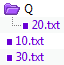

Dans le menu Actions, la commande Copier vers un dossier  copie les fichiers et les dossiers sélectionnés vers un dossier donné, optionnellement avec le chemin d'accès intact. Vous pouvez sélectionner des éléments d'un côté ou de l'autre côté de la vue de Comparaison de Dossiers, mais pas des deux.
copie les fichiers et les dossiers sélectionnés vers un dossier donné, optionnellement avec le chemin d'accès intact. Vous pouvez sélectionner des éléments d'un côté ou de l'autre côté de la vue de Comparaison de Dossiers, mais pas des deux.
Si un dossier est sélectionné, seul son contenu filtré sera copié (identiquement comme si le dossier était développé et tout son contenu visible sélectionné). Toutefois, si un dossier ouvert est sélectionné et que n'importe lequel de ses enfants est également sélectionné, alors la sélection du dossier est ignorée et seuls les enfants sélectionnés seront copiés.
Lorsque vous sélectionnez Copier vers un dossier, vous pouvez donner comme cible un fichier archive (tel que .zip). Si le fichier archive n'existe pas, Beyond Compare le créera pour vous.
Exemple d'options de chemin

Dans cet exemple, trois éléments sont sélectionnés : Le fichier 10.txt, le dossier Q et le fichier 30.txt.
Les figures ci-dessous montrent comment les éléments apparaissent dans les dossiers cibles, en utilisant chacune des trois options de chemin d'accès.
Conserver la structure relative du dossier
Détermine la différence minimale entre tous les chemins d'accès des fichiers sélectionnés, et le crée dans le dossier cible. Dans cet exemple, les dossiers D et P ne sont pas sélectionnés, mais ils ont été créés dans le dossier cible de façon à conserver la même structure relative.

Conserver la structure du dossier de base
Crée le chemin d'accès complet (jusqu'au dossier de base) dans le dossier cible.

Ne pas conserver la structure du dossier
Ignore toute information de chemin d'accès et copie ensemble tous les fichiers et dossiers sélectionnés dans le dossier cible. Dans cet exemple, uniquement le dossier Q a été créé dans le dossier cible parce qu'il était spécifiquement sélectionné.